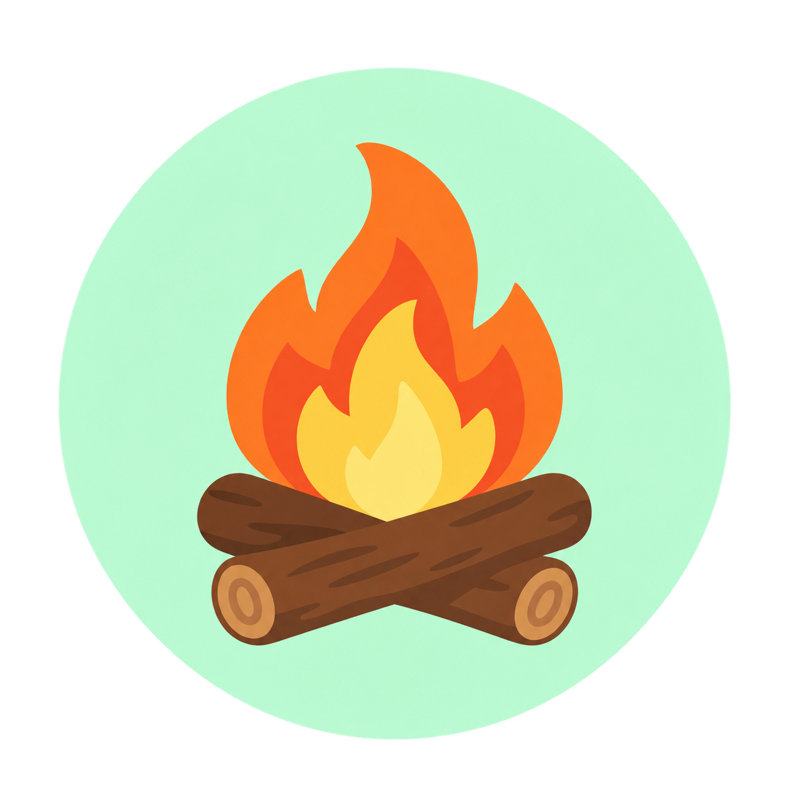

Erst beobachten
Schauen, wie dein normaler Alltag wirklich aussieht.

DIGITAL ME RoadmapDigital Me · aktueller MVP
Digital Me macht aus deinen Schritten eine persönliche Reise – mit Charakter, Story und einem nächsten Schritt, der zu deinem Alltag passt. Und wenn Daten fehlen, steht da nicht einfach 0.
Eine Zahl ist noch kein Grund, morgen wiederzukommen.
Viele Schritt-Apps zeigen dir eine Zahl. Aber was machst du damit? Digital Me schaut erst, wie dein normaler Alltag aussieht, bevor dir irgendein Ziel vor die Nase gesetzt wird.
Nicht jeden Tag perfekt. Aber den eigenen Weg im Blick.
3.500 als Ziel
obwohl 2.300 gerade realistischer sind.
Keine Daten
und plötzlich steht da einfach 0.
Ein ruhiger Tag
fühlt sich wie Rückschritt an.
Die Idee dahinter
Schritte sind bei Digital Me der Startpunkt, nicht die ganze Geschichte. Aus deinem Alltag entsteht nach und nach eine Reise, die sich nach dir richtet.
Schauen, wie dein normaler Alltag wirklich aussieht.
Ein Ziel finden, das nicht komplett an dir vorbeigeht.
Auch kleine Schritte zählen für deinen Weg.
Story, Charakter und Ausrüstung entwickeln.
Du gibst das Tempo vor. Nicht irgendein Standardwert.
So sieht es aus
Einfacher Einstieg, sichtbare Entwicklung und genug Ruhe für die Tage, an denen eben weniger passiert.
Du siehst, was heute angekommen ist. Ein Ziel taucht erst auf, wenn die Beobachtung wirklich abgeschlossen ist.
DashboardKapitel, Richtungen und Wegmarken geben den Schritten mehr Bedeutung als nur eine Zahl.
StoryDu siehst, dass sich etwas entwickelt: Aussehen, Ausrüstung und neue kleine Belohnungen.
EntwicklungWas passiert, wenn etwas fehlt?
Keine versteckte Notlösung. Kein erfundener Wert. Erst erklären, was los ist, und dann zeigen, was du tun kannst.
Wenn die Voraussetzung fehlt, zeigt die App das offen. Sie erklärt, was fehlt, und bringt dich direkt zur passenden Aktion.
erst verstehen · dann handelnWas bei dir bleibt
Keine App, die direkt ein Konto und eine Cloud-Verbindung verlangt. Die Kernreise funktioniert erst einmal lokal.
Schritte kommen aus Health Connect.
Check-ins und Fortschritt bleiben erst einmal bei dir.
Wenn Feedback nicht rausgeht, bleibt der Entwurf gespeichert.
Du kannst deine lokalen Digital-Me-Daten komplett löschen.
Unter der Haube
Nicht möglichst viel Technik, sondern nur das, was für die Reise gebraucht wird – sauber getrennt und testbar.
Sobald die App sichtbar wird, schaut sie einmal nach. Danach höchstens alle fünf Minuten. Der Kompass läuft nur auf der Reise-Seite. Feedback bleibt ein eigener, optionaler Weg.
Was schon wirklich läuft
Das hier ist kein bloßes Mockup. Die wichtigen Abläufe sind im Code und wurden auf dem Pixel 9a geprüft.
Roadmap
Erst beweisen, dass Digital Me im echten Alltag trägt. Dann sauber veröffentlichen. Erst danach wachsen — mit Inhalten, die einen echten Grund geben, wiederzukommen.
Onboarding, Health Connect, persönliche Ziele, Charakter, Story und Tagesmissionen sind als MVP gebaut und geprüft.
Nachgewiesen · MVPErste Testnutzer durch die erste Woche begleiten und herausfinden, wo die Reise verständlich ist — und wo sie noch hakt.
Geplant · TestgruppeProduktiven Relay fertigstellen, Release signieren, Store-Auftritt vorbereiten und die wichtigsten Abläufe noch einmal abnehmen.
Geplant · ReleaseNeue Story-Kapitel, Charakterstile, Missionen und Rückblicke erst dann ergänzen, wenn der Kern wirklich trägt.
Geplant · InhalteOptional testen, welche zusätzlichen Story- und Kosmetik-Inhalte echten Wert liefern — ohne den kostenlosen Kern kleinzumachen.
Hypothese · Validierung